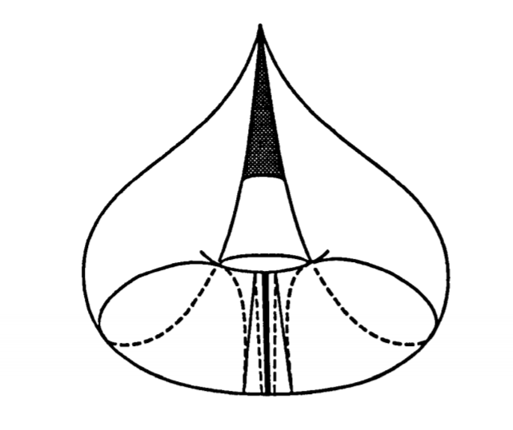
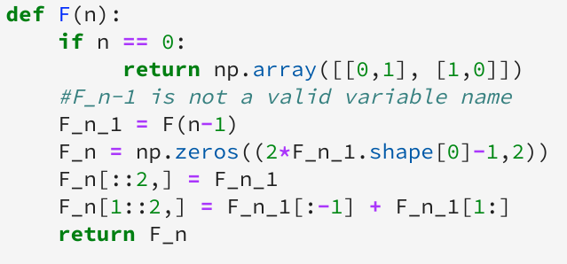
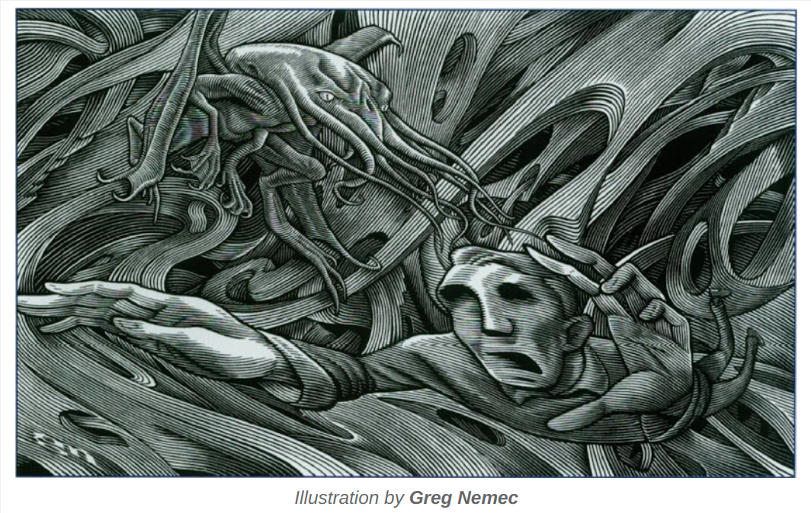
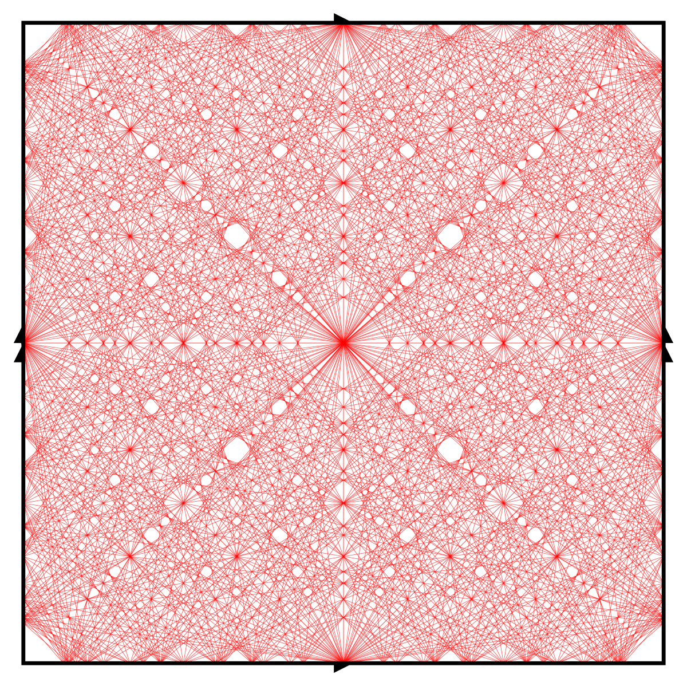
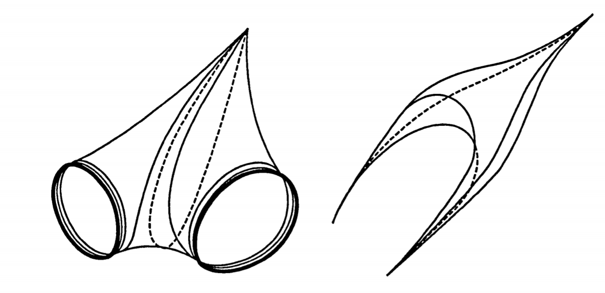
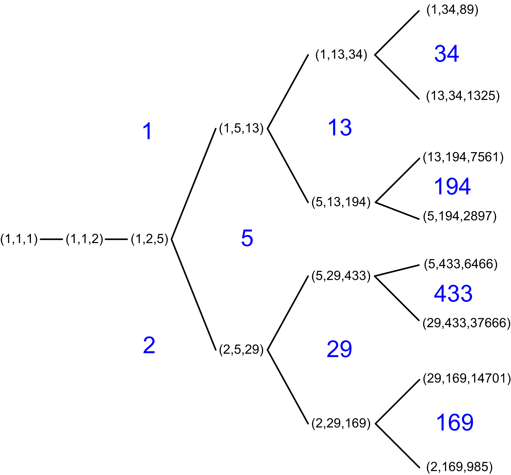
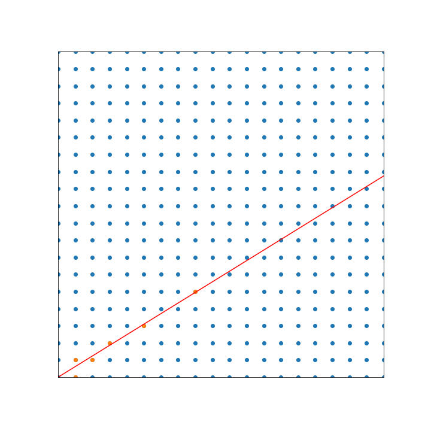

Identities Harvard
greg mc
Dec 2020
\(\sum\frac{1}{1 + e^{\ell_\gamma}}=\frac{1}{2}\)
Is a formula but it is describing a geometric truth

Illustrator 88 circa 1990
Apologies
This was hacked together
and my first time on Zoom :(
Undergrad Surfaces
2 dimensional space (manifold)
disc (is a subset of)
plane (is the image under the stereographic projection of)
sphere
torus (which is a branched cover of the sphere)
Study them by embedding \(\mathbb{R}^3\)
Coordinates
disc (polar)
plane (cartesian or polar)
sphere (spherical polar \(0 \leq \theta \leq \pi, 0\leq \phi\leq 2\pi\)
torus (spherical polar \(0 \leq \theta \leq 2\pi, 0\leq \phi\leq 2\pi\)
Geometry
Three questions
what are the isometries?
what are the geodesics?
what are the optimal maps to other spaces?
Torus
The disc, plane and sphere are simply connected.
Fundamental group is isomorphic to \(\mathbb{Z}^2\)
Is a quotient of the plane by a group of translations \(\Gamma\)
\(z \mapsto z + 1\) \(z \mapsto z + \tau\) \(\tau \in \mathbb{H} \subset \mathbb{C}\)
making a torus
from a parallelogram with corners \(0, 1, 1 + \tau, \tau\)
Tilings/tessalations
Geodesics
Geodesic = length minimising curve
straight line in the (euclidean) plane
great circle on the sphere
Geodesic foliation: \(\mathbb{R}^2\)
Geodesics on the flat torus
Being geodesic is a local property so under the projection map straight lines map to geodesics \((\theta, \phi) \mapsto (e^{i\theta},e^{i\phi})\) \(\mathbb{R}^2 \rightarrow \mathbb{R}^2 / \Gamma\)
Long term behavior
rational slope => closed
irrational slope => dense
Geodesics on the flat torus
Geodesics on the flat torus
closed geodesic \(\gamma\)
where \(p,q\)
length of the geodesic is \(\ell_\gamma = | p \tau + q |\)
this is a closed formula for the length of a closed geodesic
Let's draw some
to see how they fill outspace
Farey enumeration
Recursive enumeration coprime pairs \(p,q\)

There are holes but they will get filled in
Poincare disc/upper half plane
metric for which the orientation preserving isometries are Moebius transformations : \(z \mapsto \frac{a z + b }{cz + d}\)
img
the geometry of the dream-place he saw was abnormal, non-Euclidean, and loathsomely redolent of spheres and dimensions apart from ours.

Ideal triangles
area = \(\pi\)
Types of isometry
\(z \mapsto \frac{a z + b }{cz + d}\)
rotations : single fixed point in \(\mathbb{H}\)
parabolic : single fixed point on \(\mathbb{R}\)
loxodromic : pair of fixed points on \(\mathbb{R}\)
Punctured torus
Glue opposite sides ideal quadrilateral.
Punctured torus
closed geodesics
dense geodesics
all sorts of other geodesics
on the left simple, on the right non simple
most geodesics aren't simple they have self intersections.
81 shortest geodesics on torus

Birman-Series Theorem
The union of all complete simple geodesics is
closed
nowhere dense i.e. there are holes
Hausdorff dimension 1, so measure zero
Big question: where are the holes?
Pseudo sphere embedded in \(\mathbb{R}^3\) \((\mathrm{sech}(u)\cos(v),\mathrm{sech}(u)\sin(v),u-\tanh(u) )\)
Pseudo sphere as a quotient
Observation
The pseudo sphere is foliated by vertical geodesics
Fundamental lemma
every punctured torus contains a pseudo sphere of area 1
no simple closed geodesic enters this pseudo sphere
any simple geodesic that enters the pseudo sphere is vertical
The pseudo sphere is a bit like a black hole once past it's horizon there is no escape for the geodesic.
Historical background
Approach to Markoff's Minimal Forms Through Modular Functions Harvey Cohn dowload
Geometry of the Markoff numbers dowload
Markov numbers wiki
Intersection of Birman Series set with pseudo sphere.
\(K \times \mathbb{R}^+ = K_{ess} \sqcup K_{iso}\)
\(K\) \(K_{iso}\) "shallow" points in closure of interval \(\subset K_{ess}^c\)
also "deep" points in \(K_{ess}\)
\(\frac{2}{1 + e^{\ell_\gamma}}\)
is the length of an interval in \(K_{ess}\)
geometrically
what are the geodesics like that come from
isolated points
"shallow" points?
"deep" points?
My thesis
\(x \in K \rightarrow \gamma_x\)

Surface cut along accumulation set
Classification Theorem
\(\gamma_x\) \(\gamma_x\) otherwise x "deep"
Corollary
The gaps in \(K_{ess}\) are 1-1 with closed geodesics
Short story
Look what I proved I think you're going to like it.
Either false or Bob Penner has done it already
Short story
Markoff numbers
(Cohn) the Markoff numbers are \(2/3 \cosh(\ell_\gamma/2)\) \(\gamma\)
recursive enumeration, no closed formula

I wrote a program
Diophantine approximation
x "deep" point not isolated or shallow
Even-numbered convergents are smaller than the original number,
while odd-numbered ones are larger.

Applications :
partition of unity for integration
Teichmueller space
3 glueing parameters + 1 relation Shear coords


.svg)